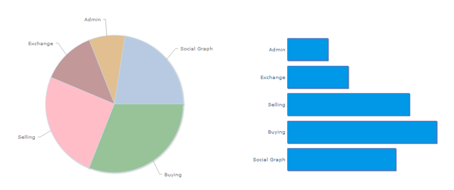

Information Design
Par Fabien Poulard / @grdscarabe / Dictanova
École de Design -- «Information Design»
7 au 11 Avril 2014
Information Design ?
verbe latin informare qui signifie donner forme à
Information Design ?
une grandeur observable et mesurable en bits (Shannon, 1948)
un équilibre en «redondance» (le surplus) et «bruit» (preturbations)
Des données à l'information
Les données ne parlent pas d'elles-mêmes : il faut les faire parler
- Compiler
- Raffiner
- Exposer
- Comparer
... pour comprendre et informer !
Données : Types de valeurs
Toutes les valeurs ne sont pas équivalentes et ne permettent pas les mêmes calculs et représentations.
Comment représenter un jeu de données :
- Hommes, Femmes et Enfants
- Évolution de la température moyenne sur les 2 derniers siècles
- Podiums aux Jeux Olympiques
- Mise en perspective du classement d'une promotion avec leur QI et leur âge
Valeurs nominales
étiquetage des données, uniquement utilisé pour identifier des catégories, pas possible de faire quoi que ce soit comme opération algébrique sur ce genre de données
Exemples :
- homme/femme
- assis à gauche/droite
- couleur de cheveux
- numéro de maillot d'un joueur
Valeurs ordinales
notion d'ordre entre les scores (performance) mais pas de notion de distance, possibilité d'utiliser max/min/supérieur/inférieur/...
Exemples :
- ordre d'entrée dans la salle
- ordre alphabétique des prénoms/noms
- classement scolaire
Valeurs intervalles
distance entre les éléments sont équivalents mais "pas de zéro" donc rapports non comparables (), possibilité de faire des moyennes et des variances
Exemples :
- heure de l'entrée dans la salle
- QI
- notes A/B/C/...
- température
Valeurs ratio
données proportionnelles car utilisation d'un véritable zéro (pas de négatif possible)
Exemples :
- taille
- poids
- age
Exercice pratique (1/2)
Qualifier ces données :
Place du monde dans les JT (INA, pdf)
- Copier-coller dans tableur
- Une ligne par entrée en ajoutant une colonne date (Pays, Mentions, Date)
- Tableau croisé dynamique sur les lignes
- Sauvegarde au format CSV pour import dans R
Exercice pratique (2/2)
Dans R :
# Chargement dans R
JT <- read.table("monde-dans-JT.csv", sep=",", quote="\"", header=TRUE)
# Accéder à la première cellule
JT[1,1]
# Toute la première ligne
JT[1,]
# Toute la première colonne
JT[,1]
# Moyenne
mean(as.numeric(JT[1,c(2,3,4,5,6)]))
# Moyenne des valeurs présentes sur 2009
mean(JT$X2009[which(!(is.na(JT$X2009)))])
Exploration statistique
La statistique descriptive regroupe l'ensemble des techniques utilisées pour décrire numériquement les populations.
Terminologie
- individu : élément d'un ensemble représenté par ses caractéristiques étudiées
- population : l'ensemble des N individus qui nous intéressent, de très grande taille voir même infinie
- observation, variable, score ou valeur : information dont on recueille/observe/mesure la valeur sur chaque individu
Les outils classiques
- Moyenne moyenne algébrique d'un groupe de scores (addition des scores et division par le nombre)
- Variance moyenne des distances à la moyenne
- Écart type racine carré de la variance (standard deviation)
Les outils classiques / Exercice
# Installation et utilisation de UsingR
install.packages("UsingR")
library(UsingR)
data(cfb)
# ?cfb
# Moyenne
mean(cfb$INCOME)
# Variance
var(cfb$INCOME)
# Ecart type
sd(cfb$INCOME)
sqrt(var(cfb$INCOME))
Boîte à moustache
Résume quelques caractéristiques d'une variable : médiane, 1er et 3e quartiles, minimum, maximum
Principalement utilisé pour comparer deux distributions.
Boîte à moustache / Exercice
Dans R : revenu par niveau d'éducation
# INCOME vs. EDUC
plot(cfb$INCOME~cfb$EDUC)
abline(lm(cfb$INCOME~cfb$EDUC))
# outliers ?
boxplot(cfb$INCOME~cfb$EDUC, xlab='educ level', ylab='income')

Histogrammes
Histogrammes division de l'espace des scores (classique) et dénombrement des individus division de la population (déciles) et hauteur=score du décile
- Médiane scores séparant 50% de la population (précision ? existance ?)
- Décile médiane est un cas particulier du décile pour 50%, déciles 10%-20%...
Histogrammes / Exercice
# Histogramme des revenus
hist(cfb$INCOME)
# Utilisation des centiles
hist(cfb$INCOME, freq=TRUE, breaks=100, col="lightblue")

Moyenne vs Médiane ?
prototype vs. stéréotype
Exploration des données sur la PAC avec R
En cas de doute sur une fonction de R : faites appel à l'aide interactive
help(read.table)
Chargement
# Chargement du contenu
> pac <- read.table("data/PAC_2012-exportcsv.csv", sep=",", quote="\"", header=TRUE)
# Nom des colonnes
> names(pac)
[1] "Nom...Raison.sociale"
[2] "Commune"
[3] "Code.postal"
[4] "Paiements.directs.aux.agriculteurs..Feaga."
[5] "Autres.paiements.Feaga"
[6] "Paiements.Feader..hors.pr.ts.bonifi.s."
[7] "Paiements.pr.ts.bonifi.s..Feader."
[8] "Montant.total"
# Dimensions
> dim(pac)
[1] 7079 8
Accès aux valeurs
# 1er individu
pac[1,]
# Montant total des 10 premiers individus
pac$Montant.total[1:10]
# ou
pac[1:10,8]
Statistiques
# Extremum
min(pac$Montant.total)
max(pac$Montant.total)
# Moyenne, variance et écart type
mean(pac$Montant.total)
var(pac$Montant.total)
sd(pac$Montant.total)
Médiane et quantiles
# Médiane
median(pac$Montant.total)
# Quartiles
quantile(pac$Montant.total, probs=seq(0,1, by=0.25))
# Déciles
quantile(pac$Montant.total, probs=seq(0,1, by=0.1))
Quel individu pour cette valeur ?
# Quel(s) individu(s) ont la valeur médiane
idx <- which(pac$Montant.total==median(pac$Montant.total))
pac[idx,]
# ou
pac[which(pac$Montant.total==median(pac$Montant.total)),]
# Quels individus dans 10% plus élevés
centiles <- quantile(pac$Montant.total, probs=seq(0,1, by=0.01))
pac[which(pac$Montant.total>centiles[100]),]
Sélection
# Exploitations de la commune de Saint Marie
subset(pac, pac$Commune=="SAINT MARIE")
# ou
pac[which(pac$Commune=="SAINT MARIE"), ]
# Combien d'exploitations en Vendée
# utilisation de la division entière sur les codes postaux
dim(subset(pac, pac$Code.postal%/%1000==85))
# ou
dim(pac[which(pac$Code.postal>=85000 & pac$Code.postal<86000),])
# Montant total moyen pour les exploitations Vendéennes
mean(pac[which(pac$Code.postal>=85000 & pac$Code.postal<86000),8])
Calculs de densité
# Calcul des départements
pac$Dpt <- pac$Code.postal%/%1000
# Nombre de subventions par département
plot(table(pac$Dpt))
# Densité des subventions par département
plot(density(pac$Dpt))
Exporter le graphe en pdf
pdf("mon-graph.pdf")
hist(pac$Montant.total)
dev.off()
Dataviz
- Pas une illustration : la visualisation doit se suffire à elle-même
- Aimer la simplicité et viser tous types de publics
- Imposer une hiérarchie/catégorie/structure pour faciliter la prise en main
- Ne pas négliger le côté narratif qui raconte les données afin d'accrocher le lecteur
- Comprendre les biais de son audience (déjouer les biais)
Visualisation de données = s'appuyer sur l'intelligence visuelle != illustrer des données
Intelligence visuelle
La rigueur de la représentation visuelle : Edward TufteVariables visuelles

Variables visuelles : adéquation par tâches

Variables visuelles : dynamique
La dimension temporelle est une variable visuelle de plus lorsque la visualisation est dynamique.
Modifications possibles :
- direction
- vitesse
- fréquence
- rhythme
- scintillement
- traînées
Types de visualisation de données

Le rôle de la Mémoire
Mémoire long terme
mémoire basée sur les expériences passées
- Arrêt au feu rouge
- Tables de multiplication
- Croix en haut à droite pour fermer la fenêtre
Pas de remise en cause sans motivation très précise !
Mémoire court terme
mémoire de travail
- Nombre dans un tableau
- N° de quai de mon train à la gare
Maximum 3 slots à la fois !
Variables visuelles et Mémoire de travail
Preattentive attributes = caractéristiques perçues par notre cerveau avant même d'en avoir conscience (<10ms)
- Formes : Orientation, Longueur, Largeur, Taille, Symbole, Courbure, Ajout de marque, Encadrement
- Couleurs : Intensité, Saturation
- Position : Positionnement dans espace 2D
Attributs préattentifs
Seul la position et la taille permettent de percevoir des informations quantitatives avec précision
 White Paper : Principles of Data Visualization